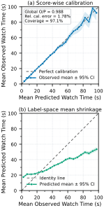
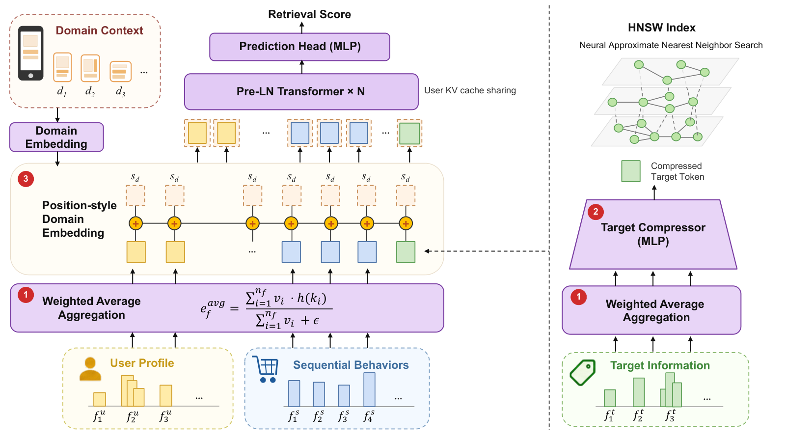
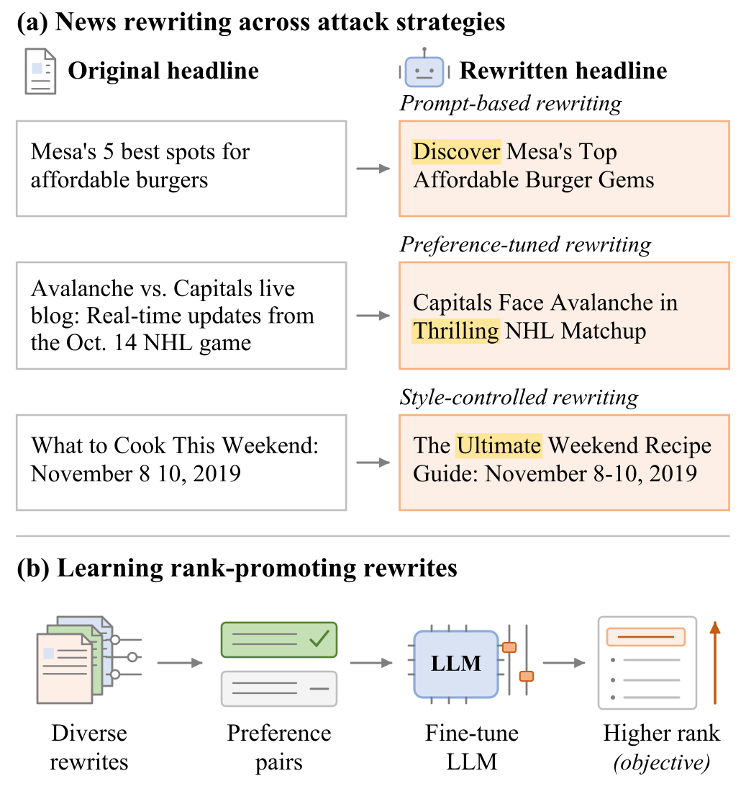
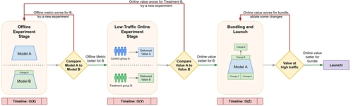
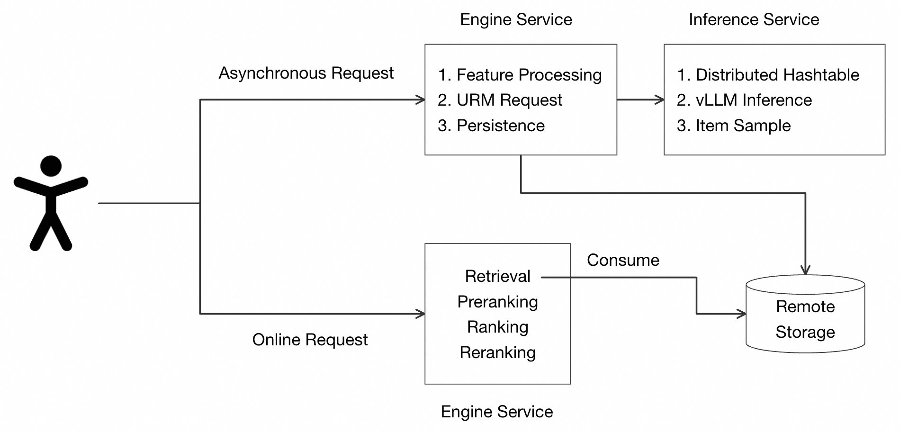

目录 · 9 节
1大促来了，平时的购买习惯还靠得住吗2同一人的日常和促销记录，先对齐再按远近加权3走一遍：经济舱常客在双十二盯上了贵酒店4预测头先冻住，活动临近再按不确定性加分5整体指标更好，新类目已购商品却更少被召回6线上对比的是正在服役的 HDR，不是离线最强的 TEN7加分有服务成本，也有限度8这对做促销推荐的人意味着什么9局限常订经济舱的人，双十二也会下手贵酒店：飞猪把历史对齐、样本加权和活动加分拆开做
双十二晚上，飞猪上有人本来总订经济舱，这回却把一套更贵的酒店放进了候选。推荐系统要判断的不是“这个人是不是变了”，而是他现在会不会下单。促销会改折扣、流量来源和下单时机，只在日常流量上更新的模型，未必跟得上这几天的短高峰。
可是完全跟着促销走，也不保险。活动里既有随便点开看看的低意愿浏览，也有一次真正跨类目的发现。把历史兴趣无条件套到活动期，可能压掉那次有用的下单；把短暂点击看得过重，又可能把平时靠得住的偏好冲淡。
阿里巴巴、中国科学院大学和圣克拉拉大学的研究者在飞猪转化预估里给出一套叫做 COTTI（对比训练与活动时刻推断）的拆法。训练时，同一用户的日常记录和促销记录会被拉近对齐，但单条促销样本会按它离历史兴趣有多远来调整分量。上线时预测头的参数冻住，再按已经公布的活动日程和预测波动，给分数加一项只能向上的修正。数据是飞猪多月曝光和转化日志，覆盖日常以及 618、双十一和双十二。
离线看 2025 年 11 月 11 日超过 1 亿条样本，这套完整模型的 AUC 是 0.8127，高于当时最强对照 TEN（跨时间对齐并混合促销专家的模型）的 0.8101，也高于线上底盘 HDR（检索历史促销样本再适应的服役模型）的 0.8001。12 月 1 日到 10 日，他们用 25% 的实时流量对照正在服役的 HDR，加权平均转化率相对提高 3.14%，千次曝光收入相对提高 2.68%。这说明完整模型在离线区分上超过了当时最强对照和线上底盘，十天在线试验里转化和收入也高于正在服役的 HDR。
在这次飞猪促销评估里，把历史对齐、样本加权和活动时刻加分拆开，整体区分和相对 HDR 的线上转化都更好；完整模型的新类目已购召回低于相关消融，但这些对照还不能确定召回下降的具体原因。
大促来了，平时的购买习惯还靠得住吗
飞猪要预估的是：在看见候选的这一刻，用户会不会为这件行程付款。特征只用这一刻之前的历史，加上当时已经能拿到的商品和上下文，不会把未来的点击写进来。事件日历再把这段历史分成日常视图和促销视图。
历史复用和跨时段迁移，是两条已经在用的路。HDR 会找回历史促销样本、校正分布，再用其中的 TransBlock 做适应，它也是后来线上试验里被替换的服役策略。TEN 则对齐不同时间的表示，并混合对促销敏感的专家，在离线表里是除 COTTI 之外 AUC 最高的对照。这篇把适应拆到三个对象上：同一人的两段历史、单条促销样本，以及活动时刻的分数。作者写明，这里的稳健只针对所评估的促销条件，并不提供分布鲁棒或子群体层面的保证。
日常流量大约每天 1,000 万用户、10 万商品、5,000 万条样本；促销日大约升到 2,000 万用户、30 万商品、1 亿条样本。这些是约数，说明促销日统计中的用户、商品和样本总规模都高于日常。总体范围、去重方式、平均区间，以及预测分母、支付归因和标签成熟窗口，正文没有完全给出。没观察到付款，既可能是成熟的负例，也可能只是转化还没来得及被记下。
同一人的日常和促销记录，先对齐再按远近加权
先看训练。共享的编码器和注意力池化，会给同一用户算出两个向量：日常视图和促销视图。对比损失只在两段历史都有的用户上配对。正对是这个人自己的两段记录，负例是其他人的促销视图，相似度用余弦，温度是 0.07。这是在鼓励连续，而不是规定促销兴趣必须等于历史兴趣。
对齐强度还加了一道门。两个视图离得越远，这道门越小，范围落在 0 到 0.5 之间，而且这道门会跟着一起反传。优化既可以让两段记录更像，也可以把这道门开得更小，而不是强迫所有人都对齐得一样紧。距离本身分不出哪些偏离是有用的发现。无日常参考的用户要怎么回退，正文也没有定义。
单条促销样本另有一套加权。系统看这件商品的表示离该用户日常视图有多远，两者被放到同一空间里比较，日常视图就是前面对比用的那个向量。再用当前小批次里的均值和标准差做标准化，权重是底为 e、系数为 1.5 的指数。低于批次平均距离的样本，权重大于 1；高于平均的，小于 1。权重不裁剪，也不再除以平均值，并且不显式看标签，所以一笔已经付款的新类目订单，分量同样可能被下调。
示意：系数取 1.5 时，两个标准化距离单位的差距，会让更近的那条样本权重大约变成更远那条的 20.1 倍。权重在前向计算里照常使用，反传时被挡住，样本只按当前权重去推分类损失，不会再为了改权重本身去优化。每一步都会按当下的表示重算这些权重。指数规则还会把促销监督的总体尺度抬高，因为批次内标准化距离的均值是 0，平均权重不会低于 1；把权重再除以平均值这一做法，这篇没有评估。 Hoot 说

对齐门 η
- 怎么算
- 由两视图平方距离直接得到：v 等于平方距离除以维度的四倍，η=1−σ(v)，落在 (0,0.5]
- 这一步的梯度
- 门和对比损失一起反传，优化既可以拉近两视图，也可以把门压小
- 下一步为何变
- 表示变了，门的公式也会变；梯度还可以直接作用在门上
- 示意
- v=0 时 η=0.5；v=2 时 η≈0.12
没有另设一套可训练的门参数，门就是距离的函数。
样本权重 ω
- 怎么算
- 商品表示与日常视图的平方距离，按当前小批次标准化后取指数，系数 1.5
- 这一步的梯度
- 前向照常用 ω，反传被挡住，只有 ω∇ℓ，没有 ℓ∇ω
- 下一步为何变
- 表示更新后按新的距离重算 ω，不是因为权重自己被优化
- 示意
- 标准化距离差 2 时，更近样本的权重约是更远样本的 20.1 倍
若去掉截断，分类损失还会多推一把权重本身；这篇没有评估。
右侧数字是示意小批次：标准化距离差 2、系数 1.5 时，权重比是 e³≈20.1。若不算 stop-gradient，分类损失还会多一条对 ω 的梯度；这篇没有评估那种写法。
出处
论文 §III-B：η=1−σ(v)，v 等于两视图平方距离除以维度的四倍，η∈(0,0.5]，且 η 参与反传。§III-C：ω=exp(−γ_rw(d−μ_b)/(σ_b+ε))，经 stop-gradient 加权促销交叉熵，每步按当前表示重算；γ_rw=1.5 时，两个标准化距离单位的权重比为 e³≈20.1。任务损失里，日常样本按普通交叉熵计算，促销样本乘上这道挡住梯度的权重，再加上对比项和参数缩减。实现是 TensorFlow 上共享的四层 MLP，隐层宽度 512，Adam 学习率 0.0001，预热 5,000 步，批次 2,048，训练环境含 64 张 A100。选中的损失系数、停止规则和预测器训练的搜索预算，正文没有完全给出。

走一遍：经济舱常客在双十二盯上了贵酒店
假设一位常订经济舱的用户，在双十二把一套更贵的酒店放进了候选。训练这条样本时，系统只取这次曝光预测时刻之前的历史，再划分日常视图和促销视图。对比项会把他自己的两段历史当成正对，把其他人的促销历史当成负例。如果他在促销里逛的东西已经和日常差得很远，那道对齐门会变小，不会硬把他扭回“只喜欢经济舱”。
这套贵酒店离日常画像更远，在同一批次里往往会拿到更小的权重。哪怕最后他真的付款了，这笔正例对参数的拉力也会变弱；同一批次里更像他日常口味的样本，分量会更重。标签仍然是有没有付款，远近只改这份样本有多能推动模型，并不把跨类目购买改判成噪声。
训练结束后，预测参数冻住。上线时不再做对比配对，也不再按训练批次重算权重。系统先算出一个关掉 dropout 的基础 logit，再看活动日程：离已经公布的高峰越近，时间核越大；同时让预测头做 10 次 dropout，用这 10 个 logit 的方差当不确定性。先把方差乘上敏感度，用 tanh 压到 0 到 1 之间，再乘时间核，加到基础 logit 上，最后经过 sigmoid 得到概率。这一项只能把转化概率往上调。波动为零，或离活动中心已经很远，加分就消失，退回原来的确定性概率。
示意：两个候选的基础 logit 如果已经相差超过这条时间核的最大值，即使一个拿到全部加分、另一个为零，加分也不超过时间核本身，前后顺序不会反过来。这篇没有给出最终选中的振幅和敏感度，也没有评估自动回退或漂移检测。
预测头先冻住，活动临近再按不确定性加分
活动中心由已经公布的档期决定，宽度来自历史活动里高峰流量最高的 20% 小时，不用这次测试期实际跑出来的高峰。振幅在验证集上做网格搜索，敏感度的候选是 0.1、0.5、1.0 和 2.0。历史区间如何映射成高斯宽度、振幅网格，以及最后选中的两个数，都不在已公布的设置里。
不确定性来自预测头，不是编码器，更不是对购买意愿本身的测量。对每一对用户和商品，编码器只算一次确定的结果，这十次 dropout 都复用它；dropout 只加在头上，比率是 0.2。作者后来说，这种事件条件加分也能抬高 TEN，所以不能把未加这项时的对照差距，全部算到前两截训练改动头上。
整体指标更好，新类目已购商品却更少被召回
离线比较放在 2025 年 11 月 11 日，12 月的观察没有拿来调这个模型和它的校准。更早的训练、验证截止，以及各对照自己取历史数据和做适应的预算，正文没有完全写清。作者把这些数字读成给定协议下的系统对照，而不是控制了全部训练选择的架构孤立试验。线上转化和收入的提升是相对值，离线 AUC 差是绝对值；他们只给点估计，没有置信区间、重复试验的波动或显著性声明。
完整 COTTI 的 AUC 是 0.8127，均方根误差 0.1807，交叉熵 0.1482，都优于表里的其他模型。去掉跨周期对齐后 AUC 落到 0.8082，去掉按距离加权落到 0.8051，关掉活动加分落到 0.8102。这说明三截都对总体区分有贡献，但贡献不是彼此独立算出来的。聚合校准是另一回事：COTTI 预测转化合计与实际之比是 0.9432，仍然偏低；只加促销标记的对照绝对误差是 0.0510，小于 COTTI 的 0.0568，尽管它的 AUC 更低。排序变好，并不等于把转化总量估得更准。
新类目在这里的定义是：这件商品的类目没有出现在用户这次曝光之前的历史里。类目层级、回看窗口、队列人数和标签成熟窗口都没有给出。已购召回问的是，观察到的那次购买是否出现在前 K 个候选里，但 K 和候选集怎么构造也没有写。这是离线排序指标，不是多成交了多少的因果估计。
| 对照（完整模型减去消融，绝对差） | 区分 AUC | 已购商品的正类损失 | 已购召回 |
|---|---|---|---|
| 熟悉类目，相对去掉加权 | +0.0082 | −0.0120 | +0.0034 |
| 新类目，相对去掉加权 | +0.0028 | +0.0038 | −0.0008 |
| 新类目，相对去掉对齐 | +0.0016 | +0.0019 | −0.0004 |
熟悉类目上，加上按距离加权以后，三项都更好。新类目上，区分仍提高 0.0028，但已经买下的商品得到的概率支持变弱，召回下降 0.0008，也就是 0.08 个百分点，不是相对百分比。和去掉对齐相比，召回下降 0.0004。更好的正负排序，可以和更弱的已购支持同时出现。权重分位数、付费新类目样本占总权重的份额，以及在同一批人上同时去掉对齐和加权，这篇都没有提供，所以还不能把召回下降的原因单点到某一项机制上。
活动加分本身也经过一组对照。预测器冻住以后，只加时间偏置，AUC 从 0.8102 升到 0.8108；只做成仿射校准，损失降到 0.1489，AUC 不变；只按不确定性加一个常数幅度，AUC 到 0.8116。再加上事件时间核，才到完整模型的 0.8127。同一套加分把 TEN 从 0.8101 抬到 0.8123，损失从 0.1503 降到 0.1486，两者只差 0.0004。这说明事件条件加分对两个预测器都有用，也把未加这项时的差距削掉一大截。
线上对比的是正在服役的 HDR，不是离线最强的 TEN
12 月 1 日到 10 日的试验覆盖 25% 实时流量，对照是当时线上的 HDR，处理组是 COTTI。试验说明里没有分组比例、随机化单位、每臂人数和并行策略变化，无法独立判断两组是否平衡、彼此有没有干扰。加权平均结果是转化率相对提高 3.14%，千次曝光收入相对提高 2.68%。汇总用的权重没有给出。转化率分母、退款怎么处理、归因窗口也没有完全写清。TEN 和加上活动加分的 TEN 只出现在离线表里，线上业务结论只对替换 HDR 成立。
12 月 12 日这套模型放到全部实时流量上。论文按两小时一段画出当天转化率和千次曝光收入的相对变化，并写明对照总体和汇总规则都没有给出，这条轨迹只作描述，不是又一次带着同期对照的处理效应，也不能当成十天试验那组 3.14% 和 2.68% 的复证。

加分有服务成本，也有限度
服务走阿里的实时预估基础设施，用户画像、候选行程和历史特征来自特征店。硬件、实例、负载和候选规模是对齐的，但具体机型、精度和批处理没有给出。对比对齐和样本加权发生在训练阶段；上线只多做活动时刻的加分，不会在请求里更新参数。
单值推理延迟表里，COTTI 训练 83 分 17 秒，推理 28.62 毫秒，比 Base（按日在日常流量上增量更新的 ESMM 生产预估器）的 78 分 58 秒略长，却比 Base 的 28.82 毫秒略短。TEN 的单值推理最低，是 26.31 毫秒。这说明训练时间略增，单值推理略快于 Base，仍慢于 TEN；该表的聚合统计和计时边界没有给出，不能当成某一分位数。
端到端表才是完整随机服务路径的计时：关掉加分时，p99 是 36.7 毫秒，每秒 15,400 次请求；打开 10 次头部采样后，p50、p95、p99 分别是 26.4、32.0、38.9 毫秒，每秒 14,700 次请求。这说明打开 10 次头部采样以后，尾部延迟和吞吐都比关掉加分时差一截，但单值那张表不能代替这条端到端路径。
在匹配负载和共同吞吐约束下，加分把三个分位延迟增加 1.6、1.7 和 2.2 毫秒，吞吐下降 4.5%。完整模型的 p99 仍低于 Base 的 42.1 毫秒和 HDR 的 42.8 毫秒，吞吐也更高；相对 TEN，p99 高 0.7 毫秒，吞吐低 1,100 次，约 7.0%。这说明加分有可测量的代价，效率并不是处处更优。延迟阈值、并发、预热、持续时间和重复次数没有给出，单个 10 次采样的工作点也不能说明怎样采样最省。对每一对用户和商品，计算量大约是一次编码加上 11 次预测头，不含特征拉取和调度，也不等于墙上的等待时间。
这套设计更说得通的前提是：历史兴趣里还有可复用的信息，而且已经公布的活动时间往往对应系统性低估。缺少稳定历史、行为已经永久转向，或者基本模型本来就在高估时，它不太合适。加分只能把概率往上推，不能把估高了的分数压下来。
这对做促销推荐的人意味着什么
如果线上正在跑的是按历史促销样本适应的 HDR 一类系统，这篇提供了一组可落地的拆法：训练时不要把所有促销点击等权看待，上线时也可以在不改参数的前提下，按档期做一次有上界的加分。飞猪这次测量里，总体区分和相对 HDR 的转化、收入都有提高，端到端 p99 仍低于原来的线上对照。
验收如果只看总 AUC 或大盘转化，会把新类目里已经买下的商品召回下降漏掉。把同一套加分接到已经很强的 TEN 上，离线差距会收得很窄，所以不能把所有线上收益都解释成前两截训练改动。要复现完整系统，还缺标签成熟窗口、已购召回的截断、无日常历史用户的回退，以及选中的校准系数。
局限
数据规模、去重、预测分母、标签成熟、转化率分母和归因窗口都不完整，未付款既可能是负例，也可能是延迟反馈。线上试验没有报告分组细节，也没有置信区间，对照只到 HDR。新类目队列的规模和召回截断未知，召回下降的机制缺少权重分配方面的诊断。活动加分的最终振幅和敏感度、以及自动回退策略，这篇都没有给出。
读完这篇，你觉得
夜读鸮记下了，谢谢你的反馈。
点一下即可，无需登录；再点一次撤回。只统计匿名次数，不记录你是谁。
相关论文RELATED

Personalization · 2026-05-20DADF: A Distribution-Aware Debiasing Framework for Watch-Time Regression in Recommender Systems快手的时长模型整体是准的，但按真实看了多久分组，短的被高估、长的被低估。做法是冻住原模型，再训一个小网络预测“真实时长是原预测的几倍”，截断在 0.1 到 10 倍后乘回去，下游接口不变。线上 MAE 降 12.57%，三个排序阶段人均时长涨 0.649%、0.235%、0.199%，均已全量。离线平均 4.33% 的 MAE 降幅主要来自弱模型，强模型只有 1% 到 2%，三个模块各自贡献都不到 0.5%。
Personalization · 2026-08-28TransRetrieval: Scaling Up Transformer-Based Retrieval for Industrial Recommendation召回阶段一直很难像排序那样靠加大模型变好，因为召回要在几千万广告里几十毫秒内选出几千个，每个被访问的候选都要过一遍模型，算力被候选数放大。阿里展示广告的 TransRetrieval 把召回打分模型换成 Transformer，先把多值特征从求和改成加权平均来拉齐尺度，再把广告侧所有特征压成一个 token，省下的算力投到更宽更深的模型上。候选侧压成一个 token，算力花在模型本身。随着每个候选的计算量增加，Recall@2000 从 0.464 稳步升到 0.657。线上一个月平台收入提升 2.53%，延迟不变。
Personalization · 2026-11-04PACT: Defending Recommendation against Promotional News Rewriting via Attack-Diverse Score Consistency新闻发布方可以让大模型把标题改得更抓眼球，事实一个字不动，排名却能往上走。这篇论文提出的防御方法叫 PACT，它只改训练。事先用很多种大模型和改写方法，给训练集里的新闻各生成一批改写标题。训练时每碰到一篇新闻，就随机抽一个改写版，要求模型对同一个用户给原标题和改写标题打出差不多的分。上线的模型结构不变，不加过滤，也不增加延迟。面对最强的改写攻击 LANCE，NRMS 上排名被抬高的用户和新闻组合从 61.4% 降到 55.4%，攻击被削弱，但没有被消除。
Personalization · 2026-10-24A Framework for Value-Aligned Modeling and Robust ExperimentationGoogle Discover 广告团队的模型迭代里，离线结果和线上结果对不上：转化模型离线损失的变化和线上广告主价值的相关系数只有 0.1，大量离线变好的改动在小流量 A/B 阶段失败。这篇论文把离线损失按每次点击对广告主值多少钱加权，让损失下降对应到价值上升。改完以后，离线到线上的相关系数升到 0.65，两类模型换用新目标后线上价值合计提升 4.7%。 Personalization · 2026-10-16Bridging the Topological Divide: Dual-Branch Graph Distillation with Semantic Priors for Robust Cold-Start Recommendation新物品没有交互边，图推荐便无法从邻居获取兴趣信号。作者先用文本语义固定协同空间，再让独立学生网络学习表示方向，并在检索时恢复向量长度；Sports冷启动Recall@20比DropoutNet高20.8%。
Personalization · 2026-10-16Bridging the Topological Divide: Dual-Branch Graph Distillation with Semantic Priors for Robust Cold-Start Recommendation新物品没有交互边，图推荐便无法从邻居获取兴趣信号。作者先用文本语义固定协同空间，再让独立学生网络学习表示方向，并在检索时恢复向量长度；Sports冷启动Recall@20比DropoutNet高20.8%。
Generative · 2026-11-04Large Language Model as Universal Retriever in Industrial-Scale Recommender System阿里淘天这篇 CIKM 论文让一个大模型同时承担点击、分场景、长尾、兴趣探索、带搜索词等多种召回目标，总体效果还好过工业界常用的多任务召回模型。用户历史和这次召回的目标都写成一段输入，大模型一次前向输出几个用户向量；数千万候选商品各取与这些向量内积中的最高分作为得分，再选得分高的一组。在工业数据的 9 种召回目标上，平均 R@1000 比最强的多任务基线相对提升 11.0%；广告平台线上 A/B 中，广告收入提升 3.01%。真正有用的是一个模型听指令切换召回目标：和已学目标相近的新目标，改一句描述就能试。
讨论
欢迎补充实验细节、复现经验或不同看法。需 GitHub 登录。
正在加载讨论…